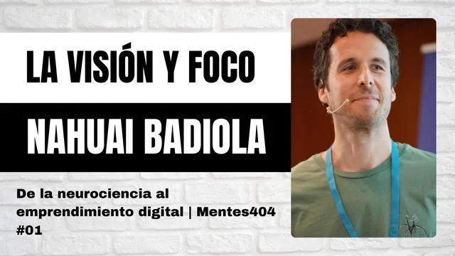

De la neurociencia a WordPress: Nahuai Badiola y el arte de reinventarse sin tirar nada

La primera web que Nahuai Badiola hizo con WordPress fue para un laboratorio. El mismo tipo de lugar en el que había pasado años como investigador. Biólogo, doctor en neurociencia, tres postdocs… y, de repente, volvía a trabajar con científicos, pero esta vez construyéndoles la web.
Con esa imagen abrimos Mentes404. Porque resume algo que nos interesa mucho: las vidas que cambian de rumbo no siempre rompen con su pasado. A veces lo llevan consigo a otro sitio.
Un mal jefe como punto de inflexión
El cambio no empezó con una gran revelación. Empezó con una mala experiencia. Durante su tercer postdoc, en Génova, Nahuai vivió una situación laboral complicada con su responsable. Y en ese momento se hizo una pregunta sencilla y peligrosa: si no estuviera investigando, ¿qué estaría haciendo?
Le gustaba investigar, pero no le convencía la forma de vivir de un investigador. Quería trabajar en algo digital, desde cualquier lugar, y equilibrar mejor el trabajo con el resto de la vida. Así llegó a WordPress, formándose casi por completo con contenido online.
Hoy lo mira con perspectiva y sin rencor. Aquella situación, dice, fue lo que le empujó a buscar otras opciones. Y ahora vive mejor haciendo algo que también le gusta.
Reinventarse no es borrar lo anterior. Es darle un nuevo uso.
No tiras quince años de formación
Cuando empezó el cambio, mucha gente le miraba como si estuviera tirando quince años de carrera. Nahuai no lo ve así. Es cierto que ya no usa las rutas biomoleculares en su día a día. Pero sí usa lo que la ciencia le entrenó: plantear hipótesis, comprobar si se cumplen y, sobre todo, el sentido crítico. Una forma de pensar con muchos paralelismos con la de un programador.
Por eso habla de huir de la falacia del coste hundido: esa sensación de que, como has invertido tanto en algo, tienes que seguir ahí aunque ya no te convenza.
Tres condiciones para reinventarse
Nahuai insiste en algo que casi nunca se cuenta en las historias de reinvención: el colchón. Él se formó mientras cobraba el paro y con el apoyo de su pareja, que seguía trabajando en ciencia. Sin esa base, el relato bonito no se sostiene.
Su resumen tiene tres partes:
- Un colchón económico: ahorros, paro o un plan compartido.
- Que lo nuevo te apasione: a los 35 no se aprende igual que a los 24, y sin ganas cuesta mucho.
- Que alguien esté dispuesto a pagar por ello: para que el cambio sea sostenible en el tiempo.
WordPress: de Genesis a los bloques
Al empezar se especializó en Genesis Framework, porque era ligero y permitía hacer mucho con poco código, frente a maquetadores más pesados. Hoy trabaja con temas de bloques, todavía más ligeros y nativos de WordPress.
Fue de los que celebraron la llegada de Gutenberg en WordPress 5.0. Llegó sin pulir, sí, pero permitió que cualquier persona, sin saber HTML, pudiera crear columnas, botones o imágenes a ancho completo. Para él fue un cambio claramente a mejor.
De ahí salen sus proyectos: OsomPress, la empresa de temas y plugins que comparte con Esther Solá y Celi (con nueve plugins gratuitos en el repositorio oficial); Código Genesis, con más de mil tutoriales de código; y el podcast Freelandev, que lleva más de seis años publicando cada semana.
La IA, con sentido crítico
Nahuai programa a diario con ayuda de la inteligencia artificial y reconoce que, bien usada, mejora la productividad. Pero cuenta una escena que cualquiera que programe con IA reconocerá: le señalas un error, te dice que tienes toda la razón, te devuelve el código "corregido"… y es exactamente el mismo.
Su conclusión: la IA no es infalible, y si no sabes de lo que estás haciendo, es difícil detectar cuándo se equivoca. Por eso anima a seguir aprendiendo y a no "fliparse".
Tampoco le convence usarla para generar contenido en masa. Si tienes algo que compartir, mejor escríbelo tú. Internet ya tiene demasiado contenido que no aporta nada.
La nube también contamina
En una WordCamp de 2019 escuchó una idea tan obvia que nunca se le había ocurrido: la nube son servidores. Consumen energía, y muchas veces esa energía viene de combustibles fósiles. Desde entonces está muy metido en la sostenibilidad web: imágenes más ligeras, hosting verde, webs más eficientes. Y cree que, con la regulación europea, saber hacer webs sostenibles será también una ventaja competitiva.
No normalices el estrés
A finales de 2019, Nahuai estuvo a punto de quemarse. Desde entonces se reserva tiempo para sí mismo: lleva años sin despertador, duerme lo que necesita, sale a correr, medita y pasea después de comer. Organiza la semana por bloques temáticos de mañana y tarde.
No pretende que nadie copie su receta. Su consejo es más sencillo: no normalices estar estresado. Empieza con media hora al día de algo que te siente bien. Y, cuando salgas a pasear, no lo hagas para que te vengan ideas. Hazlo para pasear.
Cierra con una invitación para quien empieza en WordPress: WordPress.tv, Learn WordPress y, sobre todo, ir a un meetup. La comunidad, dice, le cambió la vida. De hecho, conoció a su socia en una WordCamp.
🎧 Escucha el episodio completo
Este artículo solo recoge algunas ideas. La conversación completa, con sus matices, pausas y preguntas, está en el episodio.
👉 Episodio 1: De la neurociencia al emprendimiento digital - Nahuai Badiola, Consultor WordPress